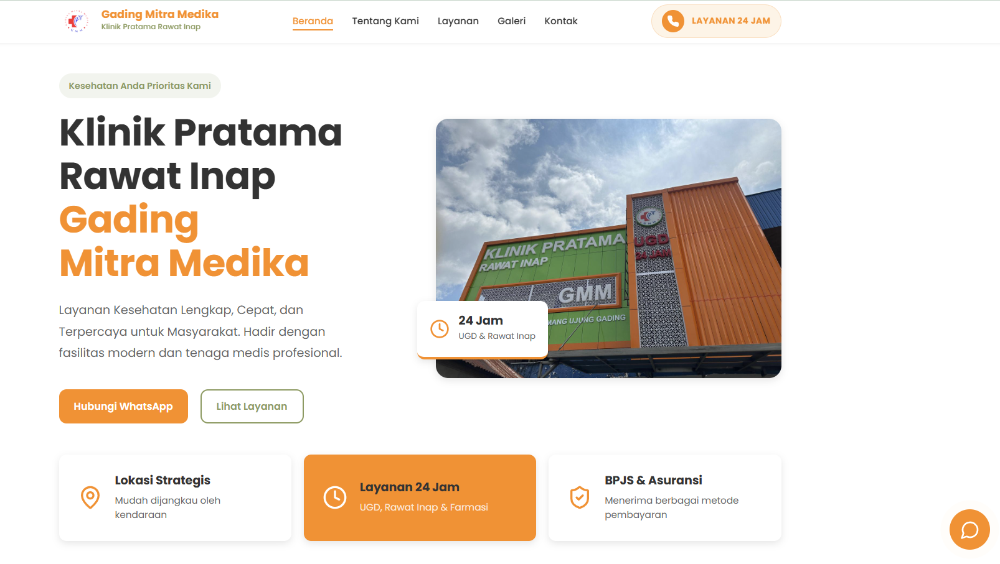
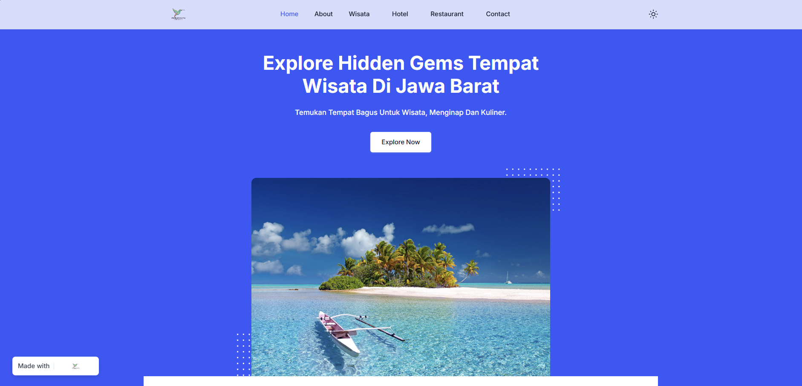
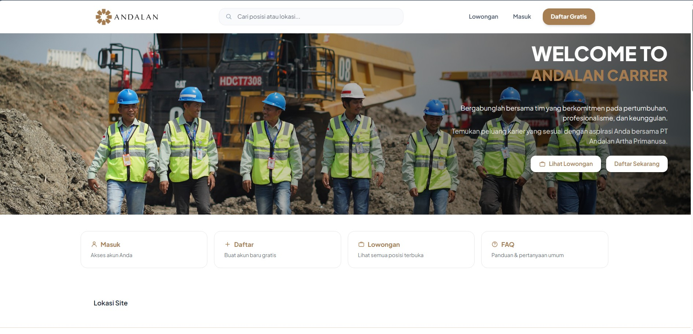

arrow_back
Kembali ke Proyek
Healthcare | Web Application
Hospital Web Application
Aplikasi web healthcare untuk menampilkan layanan, mengelola informasi, dan membantu proses digital rumah sakit agar lebih informatif dan tertata.

Ringkasan Implementasi
Aplikasi web healthcare untuk menampilkan layanan, mengelola informasi, dan membantu proses digital rumah sakit agar lebih informatif dan tertata. Project ini difokuskan untuk membuat proses lebih jelas, data lebih mudah dikelola, dan pengalaman pengguna tetap sederhana meskipun proses bisnisnya kompleks.
flag Fokus Proyek
Merapikan alur kerja, menyatukan data penting, dan menyediakan tampilan yang mudah dipakai oleh admin maupun pengguna operasional.
trending_up Dampak
Informasi layanan lebih mudah ditemukan dan pengelolaan konten hospital menjadi lebih rapi.
Fitur Utama
- check_circleHalaman layanan rumah sakit
- check_circleManajemen konten informasi
- check_circleStruktur menu layanan
- check_circleForm kontak dan informasi pasien
- check_circleAdmin panel sederhana
- check_circleOptimasi tampilan desktop dan mobile
Foto / Tampilan Proyek

